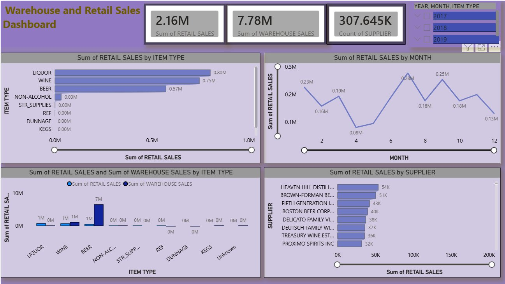
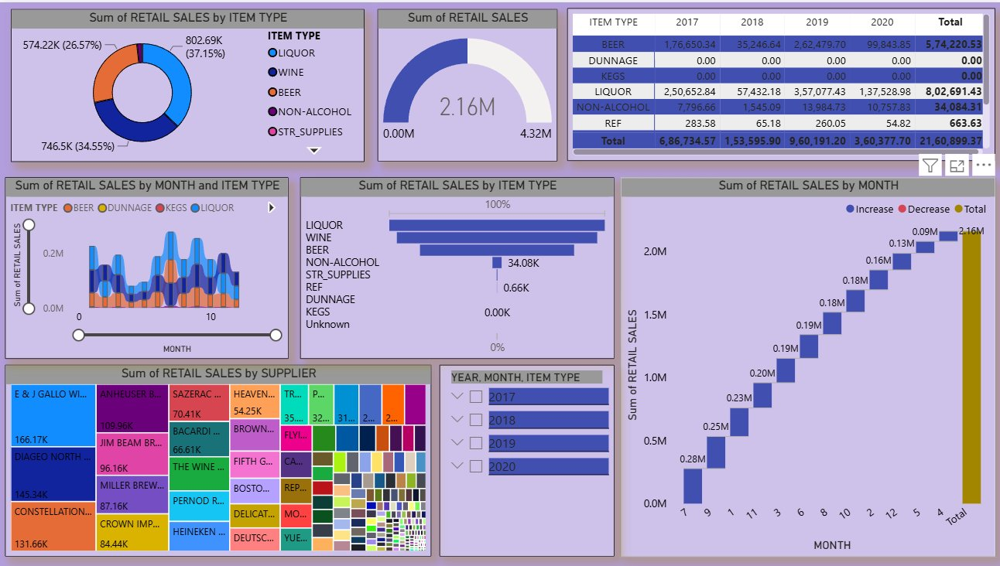

Final-year Computer Science & Business Systems student who builds end-to-end analytics — from messy spreadsheets to clean, interactive Power BI dashboards. Hands-on with a 300K+ row retail sales project and a completed data analytics internship at QSpiders.
I'm an aspiring Data Analyst and Business Analyst with a strong foundation in data analysis, business intelligence, and visualization. My toolkit spans Python, Oracle SQL, Excel, Power BI, and Tableau — and I use it to take raw, messy data through cleaning, exploration, and modelling, all the way to dashboards that non-technical stakeholders can act on.
During my internship at QSpiders, I worked hands-on with real datasets across the full analytics lifecycle — data cleaning and preprocessing, exploratory data analysis, and dashboard development — while sharpening how I communicate findings to a business audience.
I'm currently completing my B.E. in Computer Science and Business Systems (graduating 2026) and actively looking for entry-level Data Analyst, Business Analyst, or BI Analyst roles in Bengaluru and beyond — remote-friendly, growth-minded teams welcome.
Four reasons I can add value to your analytics team from day one.
Comfortable building interactive Power BI and Tableau dashboards that turn raw tables into business stories.
I can take a project from raw data and missing values to cleaned datasets, EDA, and final insights — independently.
Backed by IBM's Data Analysis with Python and two Tata data visualisation & GenAI analytics certifications.
Strengthened communication, presentation, and teamwork through internship project discussions and training sessions.
Handling missing values, duplicates, and inconsistent formats to make raw data analysis-ready.
Using Python (Pandas, NumPy, Matplotlib, Seaborn) to surface trends, outliers, and relationships in data.
Building clean, decision-ready dashboards in Power BI and Tableau for non-technical stakeholders.
Writing and optimising Oracle SQL queries to extract, join, and aggregate data for reporting.
Applying correlation, distribution, and trend analysis to validate insights before they reach a dashboard.
Translating technical findings into clear, business-friendly narratives — practiced through project presentations.
Self-assessed proficiency, built through coursework, certifications, the QSpiders internship, and the retail sales project.
Flagship project from the QSpiders Data Analytics internship — note: figures below should be checked against your final project report before sharing.
Built a complete data analytics and business analysis project on a large warehouse and retail sales dataset. Cleaned and pre-processed raw records in Excel, ran exploratory data analysis in Python to uncover sales trends and product performance, and designed interactive Power BI dashboards to communicate revenue insights for data-driven decisions.
Key findings included a strong correlation between retail sales and retail transfers, and identified LIQUOR & WINE as the dominant product categories driving revenue — insights that fed directly into the final dashboard views.


Land an entry-level Data Analyst or Business Analyst role where I can apply Python, SQL, Excel, and Power BI to real business problems, while deepening my statistical and BI skills under experienced mentors.
Grow into a senior analyst or analytics-focused product/strategy role — leading dashboard architecture, mentoring junior analysts, and eventually exploring machine-learning-driven forecasting.